Redesigning the Gold Cheque
Account Onboarding Experience
Some information has been edited or omitted to comply with my NDA. The perspectives shared here are my own.
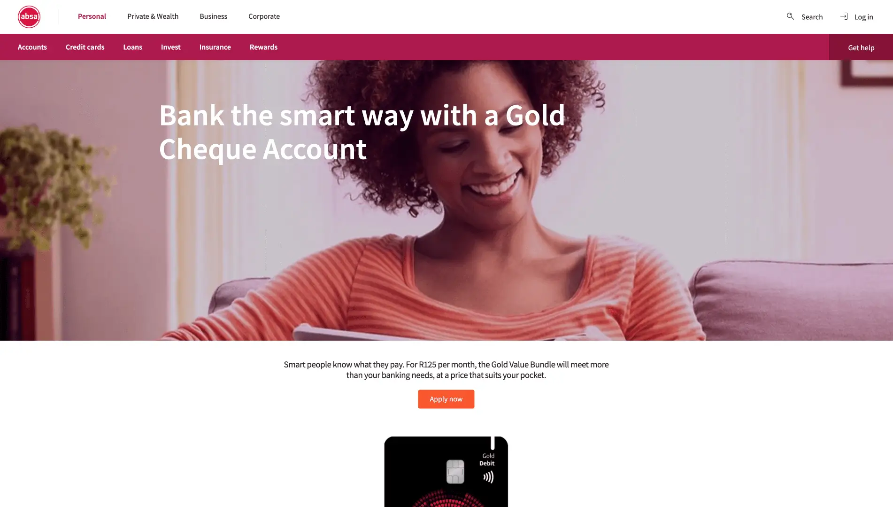
My Role
I joined Absa’s Quest to Straight-through-Processing (QSTP) team in late 2022, initially supporting the design effort. By January 2023, I stepped in as the lead designer for the Gold Cheque Account journey.
My responsibilities:
End-to-end UX ownership for MVP 1 and MVP 2.
User research & insights (interviews, analytics, usability testing).
Interaction and UI design using the DSP Design System
Stakeholder alignment across engineering, BA, process engineering, legal, and compliance
Design QA, defect resolution, and sprint collaboration
Executive presentations to secure buy‑in and unblock decisions
Chasing Straight‑Through Processing
Despite appearing simple on the surface, the Gold Cheque Account onboarding journey was built on fragmented systems and partial automation.
Legacy verification tools, inconsistent UI components, low biometric success rates, and disconnected backend dependencies resulted in 87% of customers being routed into manual FICA review.
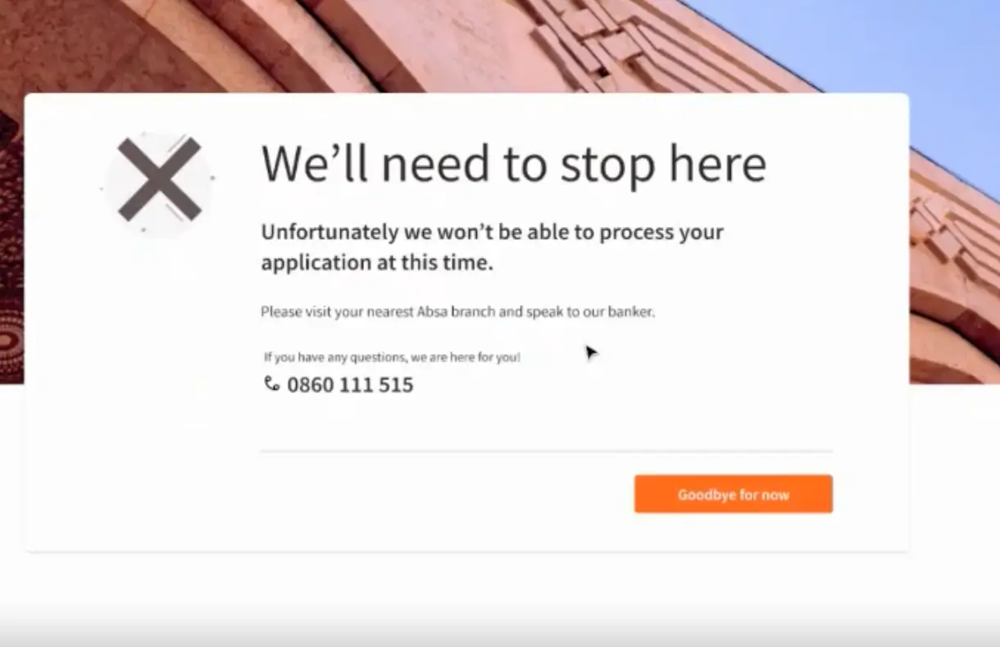
This led to slower fulfilment, increased operational effort, and diminished trust in digital onboarding.
The objective was clear:
Move the journey toward 80% straight‑through processing, eliminating unnecessary hand‑offs, callbacks, and branch visits.
The Discovery
Understanding the Problem: Early Signals from Analytics
Analytics painted a clear picture of where the journey was breaking down. Document uploads drove the highest abandonment, biometric scans rarely succeeded, and validation errors frequently disrupted progress. Customers without SA IDs were often left confused and stuck.
The numbers explained what was happening. To learn why, we shifted our focus to user conversations and testing.
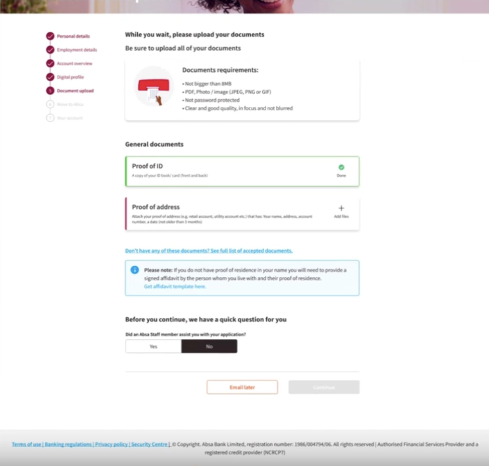
Qualitative Research
What Users Told Us
We interviewed and tested with users who were unfamiliar with the product and onboarding flow.
Key Observations:
Users expected the journey to be as easy as ordering food
They were unsure what was required until blocked
Non‑SA ID users were stuck at step zero
Errors triggered too early caused stress and cognitive load
Many users wanted clearer progress indicators and simpler forms
One participant summarised it best:
“Why am I being asked for documents now if I haven’t even decided fully? This feels like too much too soon.”
This informed our design challenge.
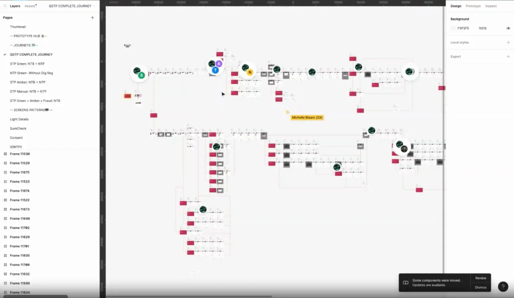
Framing the Design Challenge
These questions clarified where we needed to focus our efforts and guided the design decisions that followed, ensuring we addressed the root causes of friction across the journey.
Our core question:
How might we drastically reduce verification friction so that more customers can complete onboarding digitally and without human intervention?
Supporting questions:
How might we verify IDs and addresses seamlessly?
How might we reduce drop-offs caused by premature document requests?
How might we simplify the journey without losing compliance requirements?
How might we accelerate product fulfillment through automation?
These questions were guided the strategy.
Designing the Future State
To reach 80% STP, we proposed three major pillars:
Biometric Upgrade
Integrating iiDENTIFii to improve facial scan success from 20% → 80%.
Advanced KYC with OCR
Real-time document recognition to verify FICA documents in-channel.
Orchestration Layer for Automation
A backend layer enabling automated product fulfillment and eliminating manual interventions.
MVP 1 Hurdles
When Everything Changed
Just as development began, we received a major setback:
The orchestration layer was delayed — indefinitely.
OCR integration was postponed.
Several backend services were not ready.
Our strategy had to shift instantly.
We pivoted to:
A tactical approach focused on rapid UX/UI improvements while waiting for backend capabilities to mature.
Users were being asked to meet strict compliance requirements with almost no system support, leading to repeated failure loops.
This required:
- Revising flows already in development
- Redefining what “MVP” meant
- Managing stakeholder expectations
- Fixing defects continuously
- Preventing misalignment between pre‑dev and dev streams
This became a resilience marathon.
Tactical Fixes with Strategic Intent
Even without backend automation, we could drastically improve the experience.
Moved document upload to the end
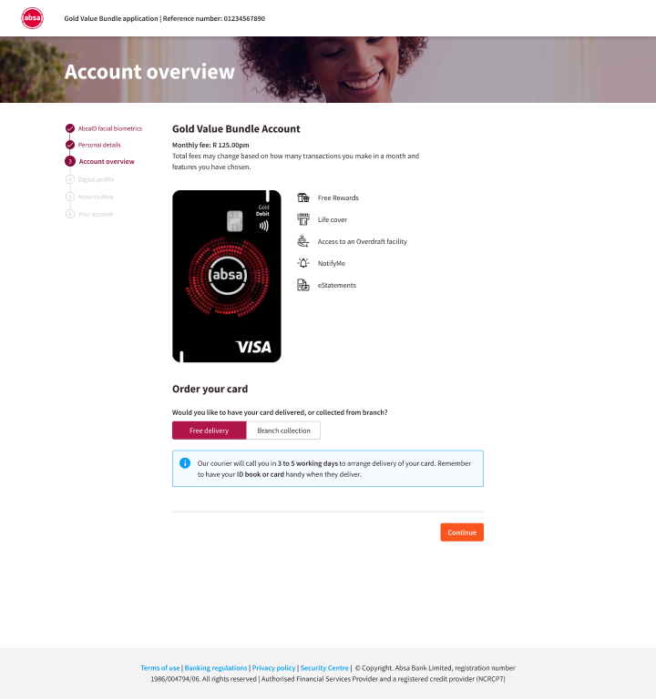
Preventing premature drop-offs.
Introduced a dedicated ID number validation step
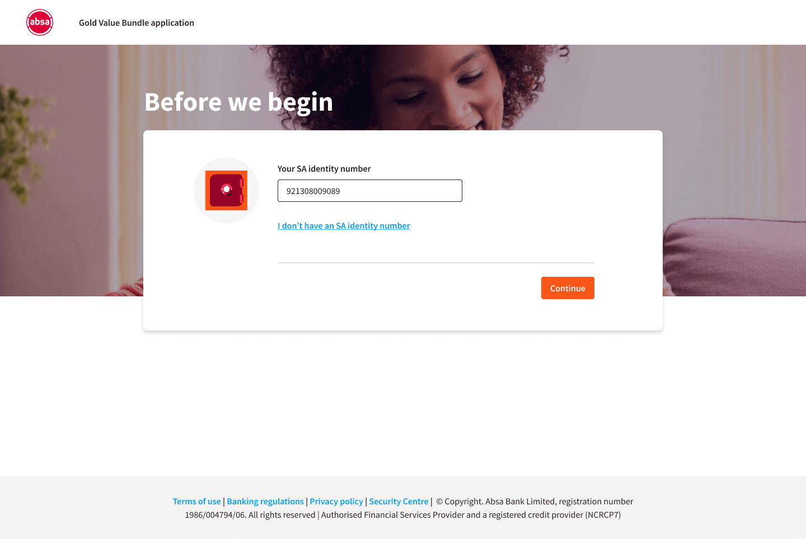
Preventing premature drop-offs.
- Tailored existing vs new customer flows
- Added support guidance for non‑SA ID customers
- Validated only after all 13 digits were entered
(Not as users typed, which caused frustration)
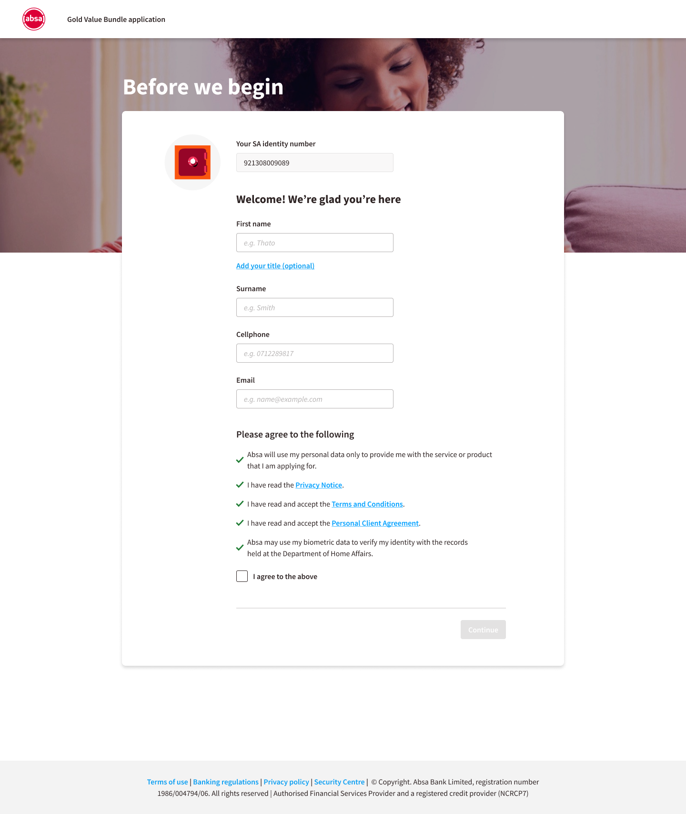
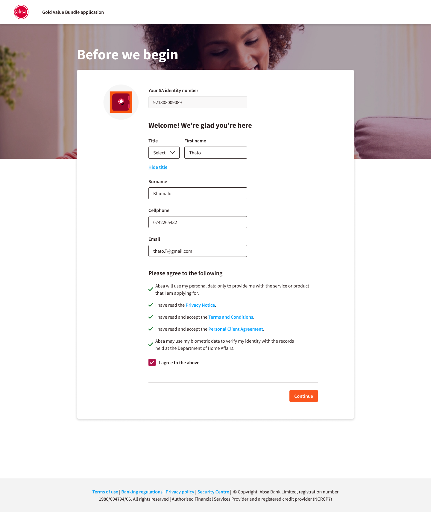
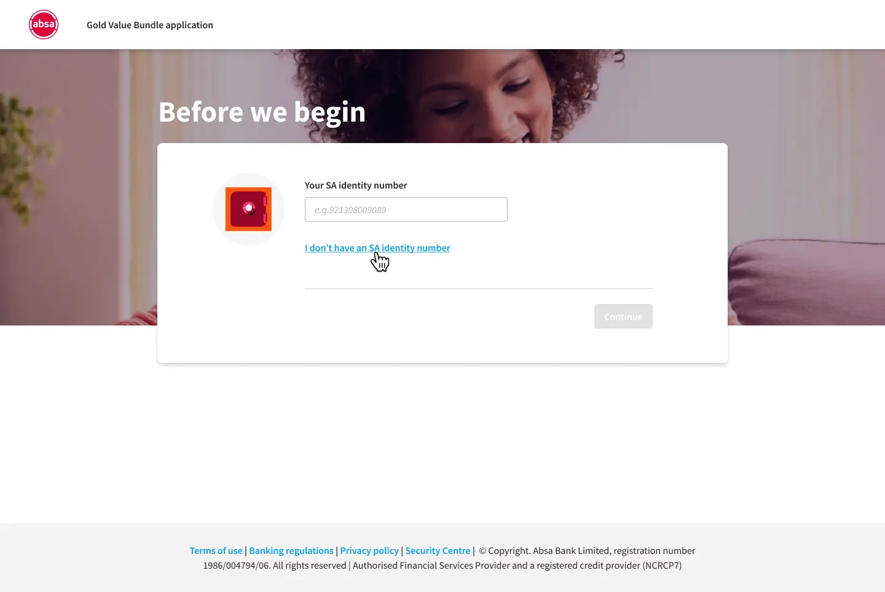
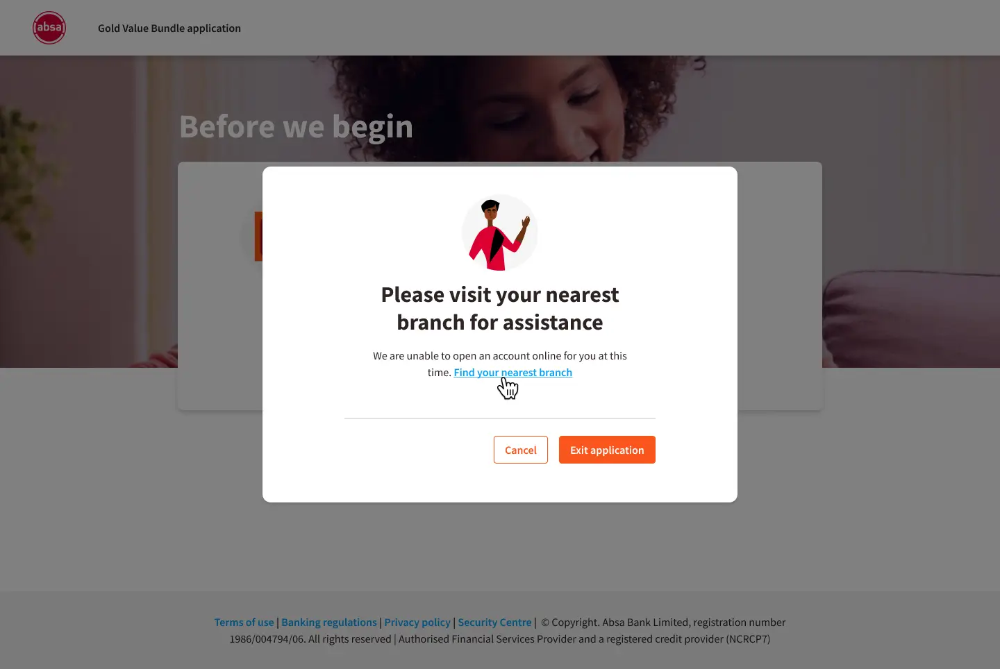
Combined personal + employment details
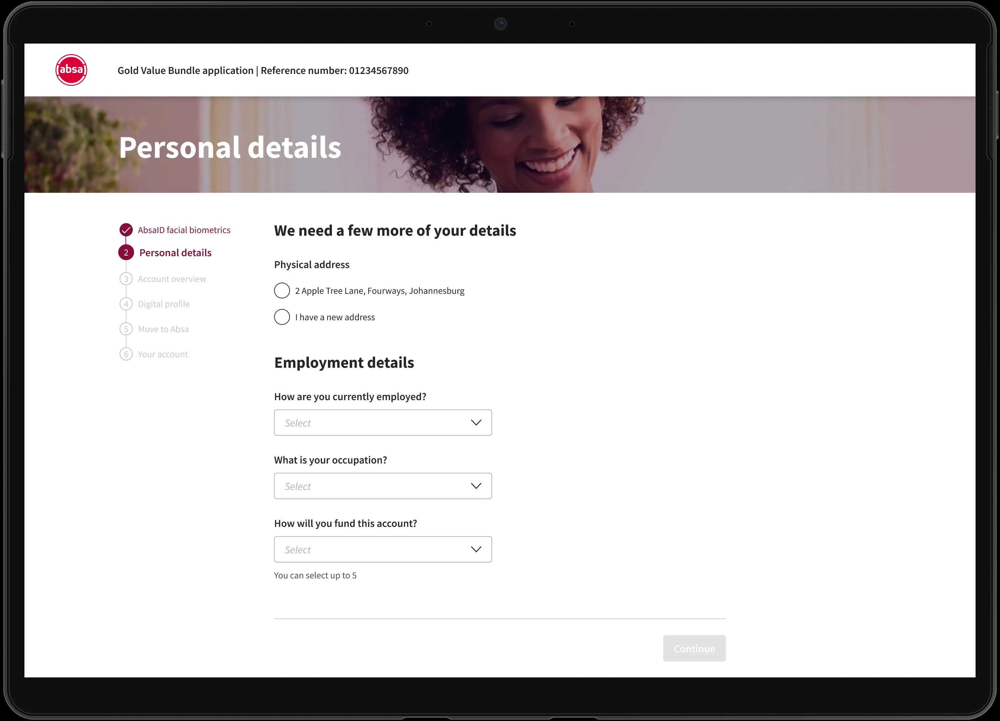
Reducing screen count, cognitive load, and visual clutter.
Serparate personal and employment details - MVP 1
Combined personal and employment details - MVP 2
Updated components to the new DSP UI Library
Replacing outdated patterns with:
- Segmented controls
- Improved form fields
- Clearer hierarchy
- More consistent naming patterns
Simplified account summary and digital registration
Fewer distractions, simpler CTAs, more clarity.
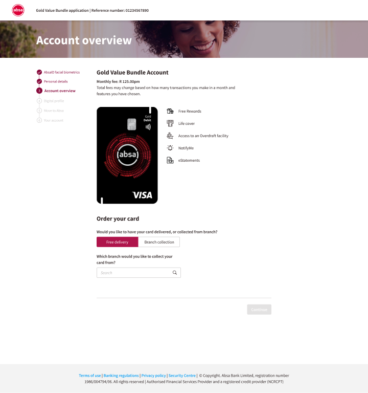
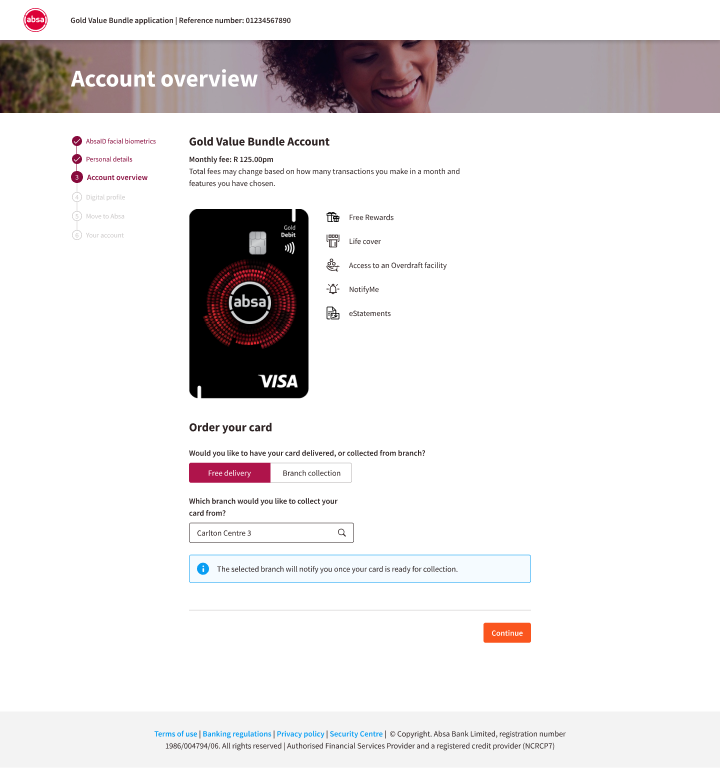
Moved colleague recognition to the end
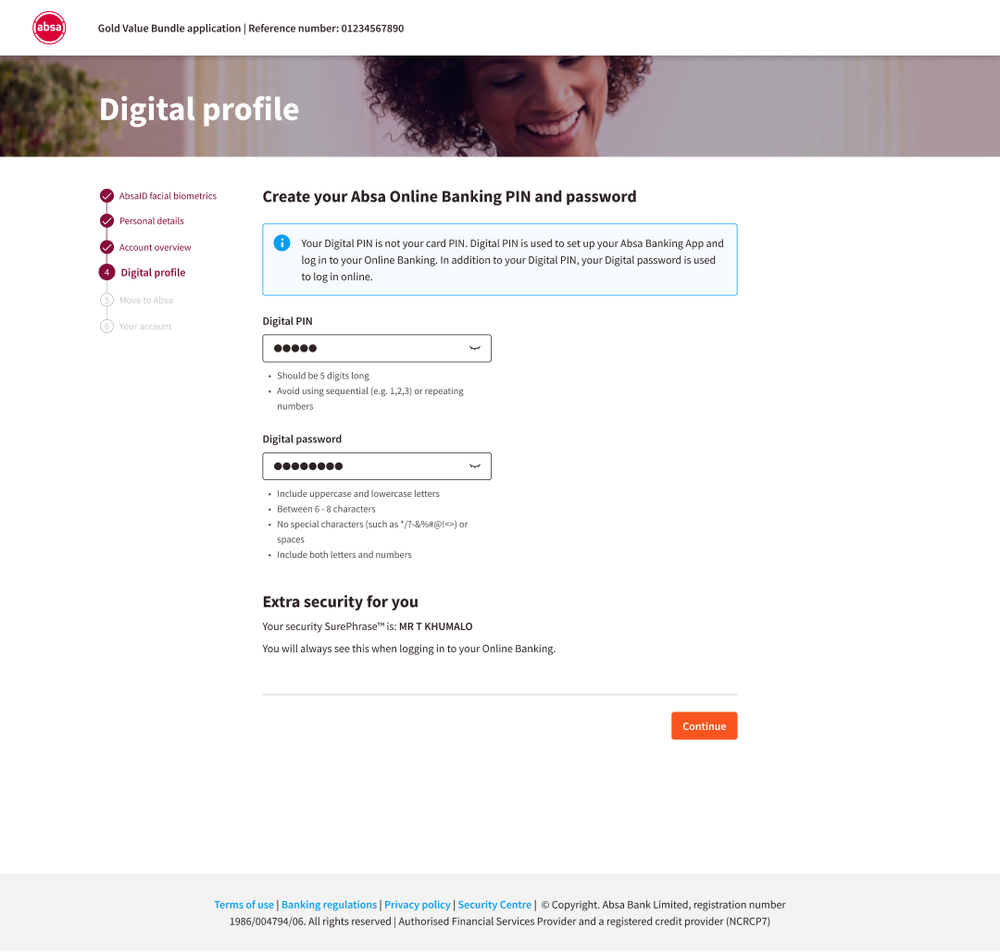
Ensuring it doesn’t interrupt the core journey.
Every improvement aimed to reduce effort and improve clarity — foundational building blocks for STP.
The innitial design was too busy, so we created a design that was cleaner by removing unwanted stuff on the screen that served no purpose.
MVP 2
A Fresh Start
This format highlights how research reshaped the problem, revealing deeper system-level issues beyond initial assumptions.
MVP 2 was smoother.
- The new DSP UI library was stable
- We could fix fundamentals that MVP 1 couldn’t
- I collaborated closely with two senior design directors
- We used Gestalt principles to refine structure and hierarchy
This phase allowed us to do the work the way it was meant to be done:
- Cleaner screens
- Faster completion time
- More consistent components
- More intuitive journey logic
- Reduced error rates
It also produced patterns now used across other onboarding journeys.
The Outcome
Even with major backend constraints, we achieved:
Improved usability across all major steps
Reduced drop-offs from earlier screens
A more consistent, intuitive journey
Re-alignment to DSP standards
A foundation ready for true STP once orchestration was ready
Patterns adopted across multiple products
And six months after our original target, we finally went live.
Not with the perfect version — but with a , scalable, customer‑centric evolution of the original journey.
What I Learned
Adaptability is a core design skill
Requirements changed. Dependencies shifted. Design had to keep moving.
UX only thrives with cross-team alignment
Engineers, BAs, process engineers, legal, compliance, every team influenced the journey.
Good design is not just visuals — it’s systems thinking
Most challenges were not UI problems but orchestration, capability, and process problems.
Resilience is underrated
There were moments it felt like sprinting with no finish line.
But staying focused ensured the product shipped.
Every iteration moves the organization forward
Our improvements shaped standards and influenced other onboarding journeys.
Closing Reflection
This project taught me that complex products are not redesigned in a single release. They evolve, through constraints, through collaboration and through persistence.
But most importantly: